Campus Food Bank · 14 November 2026
Backups you can see
The dropdown is gone in every one of these. Each design shows backups as food with photos, so a student can see at a glance what they've chosen and in what order. The pictures use the real photos from the app. Option 1 is the one I'd pick.
Chosen, 14 November: Prakash picked option 2 (the My food | Backups switch), and it's built. It also has a row of numbered photo chips at the top to change the order, and a warning in "Ready to book?" when there are no backups.
Option 1: a backup shelf with 5 spots My pick
Under the food there's a shelf with 5 numbered spots, one for each backup the student can have. Spot 1 is the first one the volunteer tries. Filled spots show the food's photo. Empty spots show a +.
Your backups
If something runs out, the volunteer uses these, from 1 to 5.
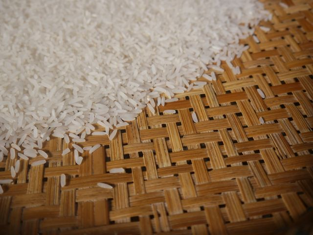
✕White rice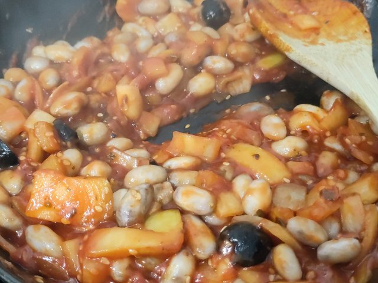
✕Baked beans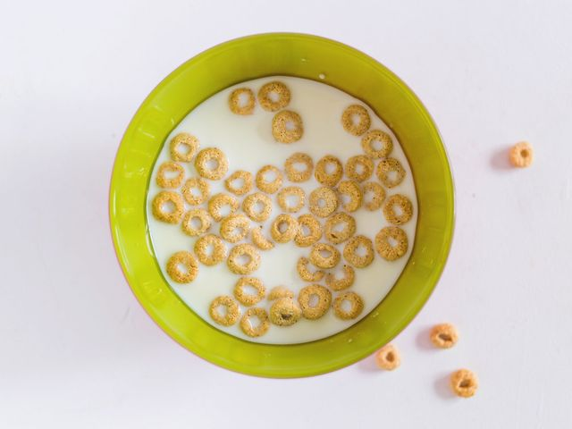
✕Corn flakesfor your Bran flakesChoose a backup for spot 4
Can replace anything
Food you didn't choose. It can fill any gap.
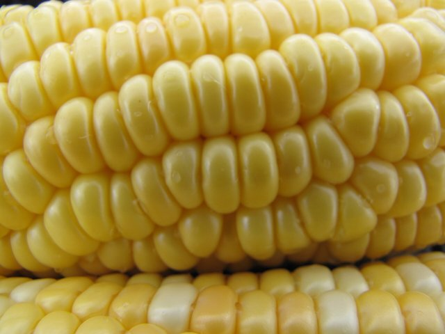
Canned corn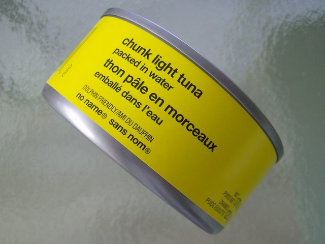
Tuna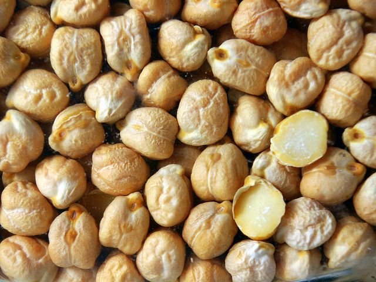
ChickpeasOnly if your own pick runs out
Another kind of something you chose.
- Tap a + and a panel comes up from the bottom with photo cards. Tap one and it goes in that spot.
- Change the order: drag a spot onto another to swap them. On a phone, press and hold first. Small ‹ › buttons do the same for anyone who can't drag.
- ✕ takes a backup off the shelf.
- Idea 2 stays, inside the panel: "Can replace anything" comes first. A spot like Corn flakes says "for your Bran flakes" in small red letters.
- The diet filter you set for your food is already on in the panel (idea 3).
- When something you chose shows Few left, the next empty spot glows and a hint shows (idea 4).
- You can see the limit: 5 spots, so nobody has to read "up to 5".
- You can see the order: 1 to 5, left to right.
- An empty spot asks to be filled, so more students set up backups.
- It fits a 360 px phone: 5 spots in one row.
- No server change. The packing rule stays the same.
- Dragging needs care to work with a keyboard and screen reader, which is why there are ‹ › buttons too.
- Work: about an evening, plus tests.
Option 2: a "Backups" switch on the food cards Good too
At the top of the food there's a switch: My food | Backups. Switch to Backups and the same big food cards you already use get a Backup button. Food in your bag is faded and marked "In your bag".
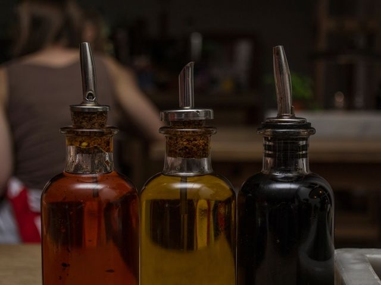
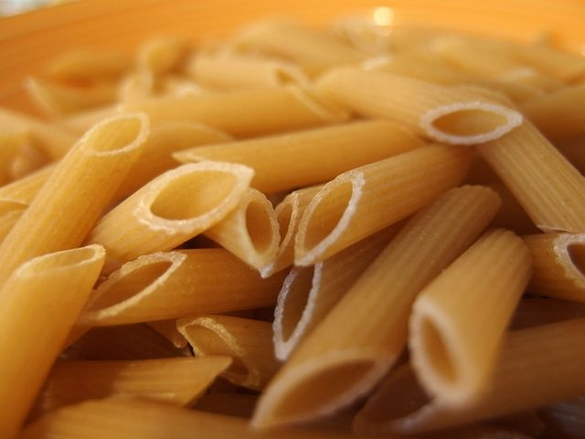
- Uses the big photo cards people already know. Nothing new to learn.
- Every food is right there, so there's no extra panel.
- Two modes on one page are easy to mix up. Someone in Backups mode might think they're adding food to their bag.
- Changing the order is hard to show on cards spread over a long page. It still needs a small row of numbers somewhere.
Option 3: a plan B under each food you chose Changes the rules
A "Your bag" list with a photo of each food you chose. Under each one there's a small spot: "If this runs out → …".
Your bag
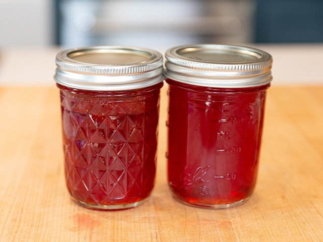
- It's the easiest to understand: each food has its own plan B. Nobody has to think about "rules".
- It's a different rule. Today any backup can fill any gap, in order (U4). This one says "this backup is only for this food". The server, the packing page, the sticky note and many tests would all change.
- It needs the food bank to agree, because it changes what goes in the bag.
- Work: several days.
Option 4: a picture of your bag and a spare shelf Fun, but heavy
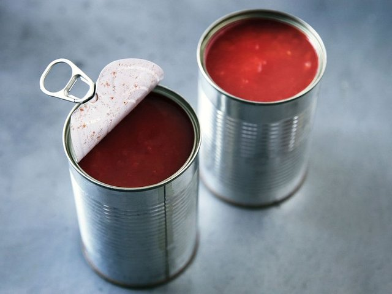
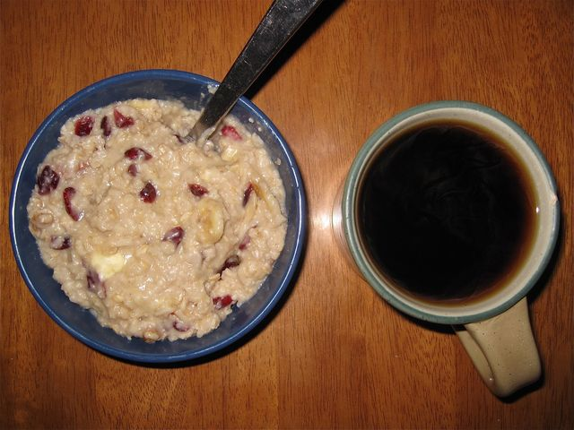
- Friendly and different. It looks like a real bag.
- With 13 foods the bag gets crowded and the photos get tiny on a phone.
- The order of the spares isn't clear (which one is first?).
- It's mostly decoration, so it's more work for less help.
Side by side
| See the limit (5) | See the order | Server change | Work | |
|---|---|---|---|---|
| 1. Backup shelf | Yes, 5 spots | Yes, 1 to 5 | No | About an evening |
| 2. Backups switch | Count only | Badges on cards spread over the page | No | About an evening |
| 3. Plan B per food | One per food | Not needed | Yes, new rule | Several days |
| 4. Bag picture | Yes | Not clear | No | A day or more |
What happens to today's dropdown: whichever you pick, the dropdown and the numbered text list go away. The two-group idea you liked stays, inside the new design.